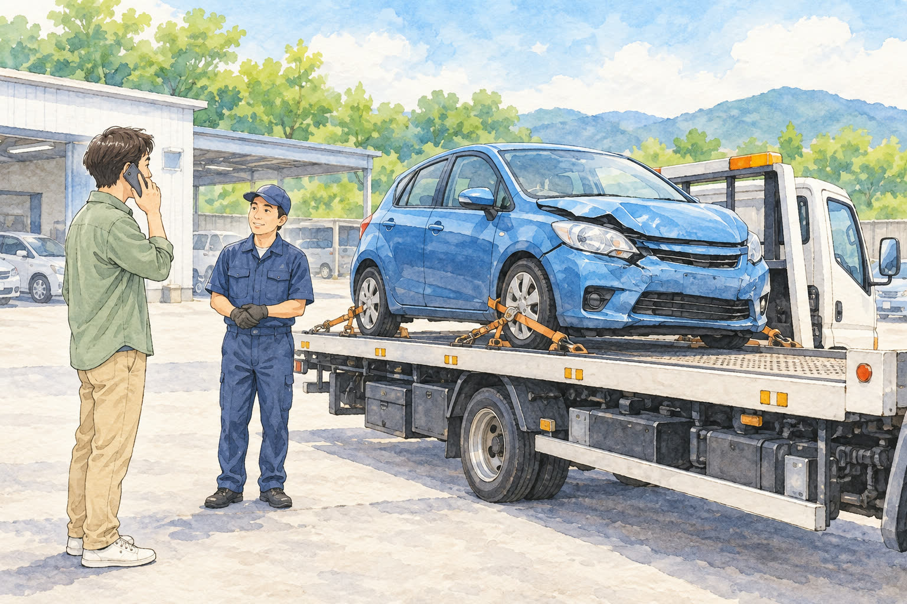
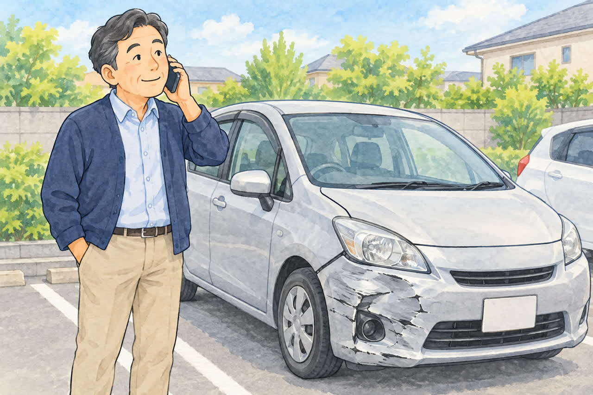
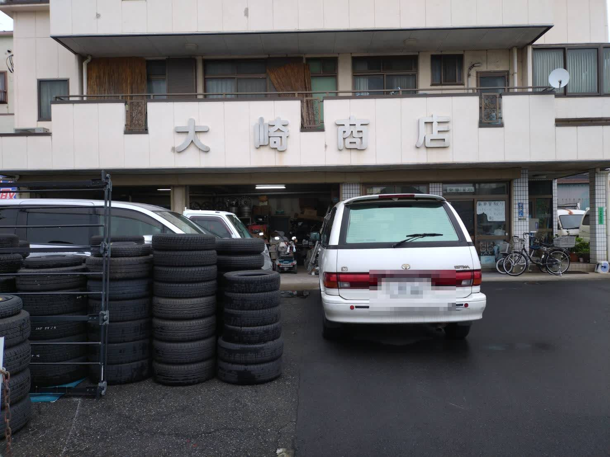
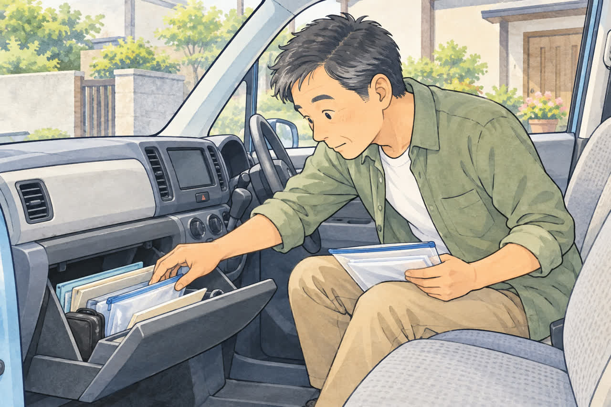
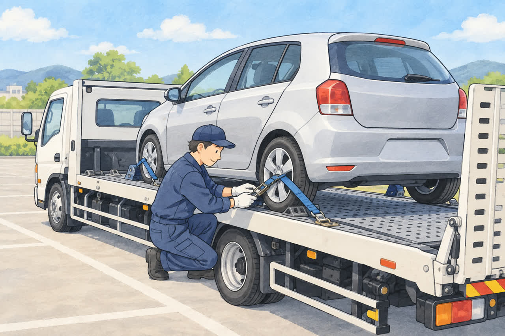
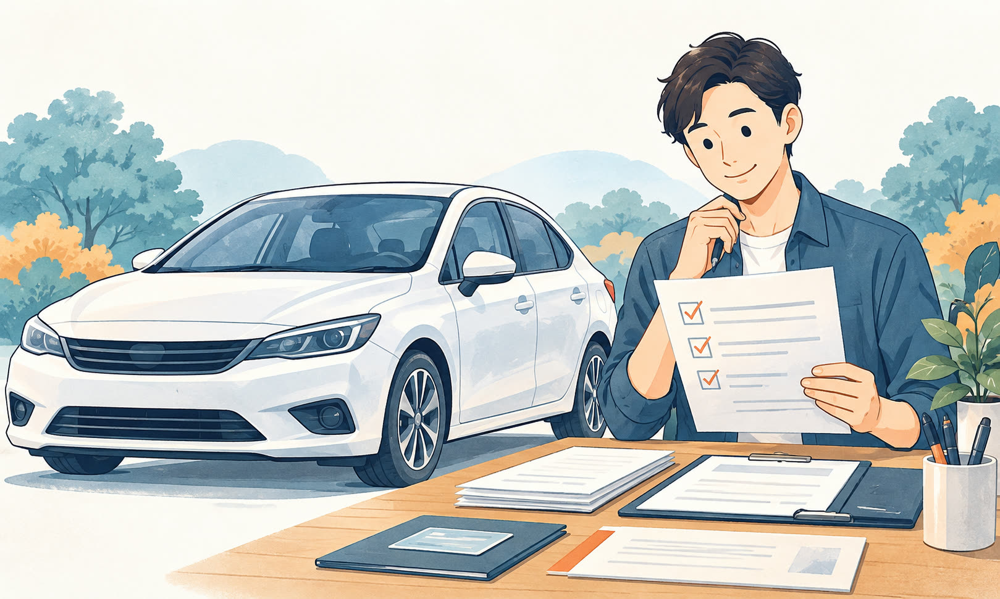
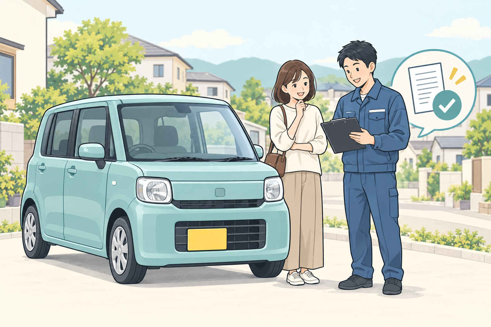
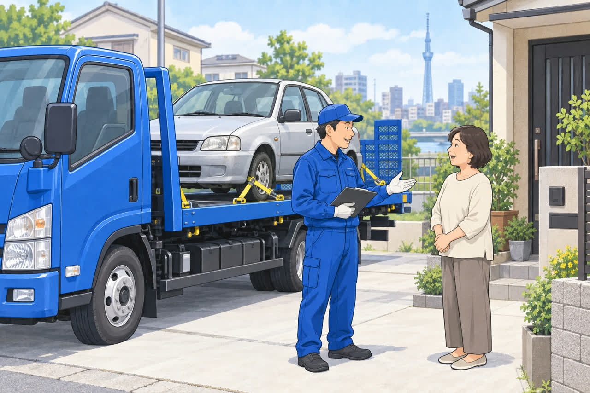

ARTICLES
記事一覧
廃車の準備や、こんな車でも大丈夫？という疑問にお答えする記事と、お知らせをまとめています。








この分類の記事は、まだありません。
CONTACT
お車のこと、まずはお電話で。
記事に載っていないことも、お気軽にご相談ください。
☎ 03-3854-4141環七店：月〜土 10:30〜18:00（日曜・祝日休業）／入谷店：月〜土 9:30〜17:30（日曜・祝日・第2土曜休業）